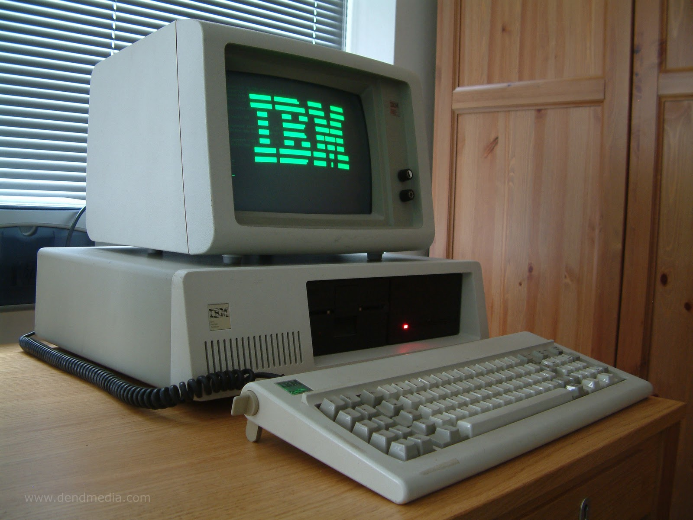

|  | |
Sobre a Quarta Geração:A partir deste ponto os computadores se transformaram, partindo de apenas um sonho acessível pelas grandes empresas para computadores pessoais, algo jamais pensado. Desta maneira, a utilização dos dispositivos começaram a se diversificar, tendo diversos propósitos dependendo diretamente do usuário e seus gostos. Sob esse ponto de vista, o destaque inicial dessa etapa da humanidade é o Altair 8800, computador este que utilizava um processador Intel 8080 e tinha a presença de uma memória RAM(com propósito de armazenar dados temporariamente) de 256Kbyte. Ademais, seu preço era apenas 395,00 dolares, sendo vendido em formato de kit, e sua montagem custava mais 100 dolares Por fim, anos a frente em 1980 o computador teve um "upgrade" e começou a ter grande sucesso comercial, se iniciando através do IBM-PC, no qual o preço acessível se tornou um pouco mais elevado (5000 dolares), porém era dotado de diversos periféricos como um teclado, monitor de vídeo de fósforo verde e um sistema operacional. Ademais, a sua memória RAM aumentou para 640 Kbyte e seu sistema operacional iniciou-se com 16 bits, porém não tinha disco rígido por não ter um sistema operacional gráfico, não utilizando mouse. |